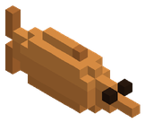

Objetos › Material

Bacalao Glacial Milenario a la Brasa
Comida Se apila hasta 64
Al comer
| Cura | 55 |
|---|
Se come con clic derecho.
Cómo se consigue
- Fabricación (Hoguera):
 Bacalao Glacial Milenario
Bacalao Glacial Milenario
Identificador: glacial_cod_roasted · archivo mods/items/cooking.json